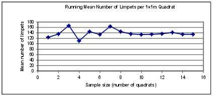

How big should sample be?
Justifying Your Sample Size
It's always a good thing to be able to say why you took a certain number of measurements. Why for instance did you count things in 30 rather than 20 quadrats. If you are interested in means of things (as you very often are) here is a simple technique that allows you to judge whether or not you have enough measurements or counts.
Let us suppose that you are investigating the mean length of elephant's trunks on behalf of Elephants R Us (The worlds leading supplier of pachyderms). The elephants are a trifle miffed with you because your tape measure tickles their mighty probocsi. You have no wish to precipitate a potentially spectacular elephantine sneeze and so decide to measure an adequate sample of trunks and no more. How can you do this? Like this:
Approach elephant number one and measure trunk
= 1.2 metres
Approach elephant number two and measure trunk = 0.7 metres
Approach elephant number three and measure trunk = 1.9 metres
Approach elephant number four and measure trunk = 1.4 metres
Keep measuring trunks in this way and you end up with a list of trunk lengths thus:
1.2, 0.7, 1.9, 1.4, 1.3, 1.6, 1.8, 1.3, 0.8, 1.3, 0.8, 1.2, 1.6, 1.3, 1.4,
You are interested in the mean length and wish to know when you have an adequate sample. What you can do is recalculate the mean every time you increase the the sample size thus:
Length xxxxxxxxRunning
Mean
(m)
1.2 -
0.7 (1.2 + 0.7)/2 = 0.95
1.9 (1.2 + 0.7 + 1.9)/3 = 1.26
1.4 (1.2 + 0.7 + 1.9 + 1.4)/4 = 1.30
1.3 (1.2 + 0.7 + 1.9 + 1.4 + 1.3)/5 = 1.30
1.6 (1.2 + 0.7 + 1.9 + 1.4 + 1.3 + 1.6)/6 = 1.35
1.8 (1.2 + 0.7 + 1.9 + 1.4 + 1.3 + 1.6 + 1.8)/7 = 1.41
1.3 (1.2 + 0.7 + 1.9 + 1.4 + 1.3 + 1.6 + 1.8 + 1.3)/8 = 1.40
0.8 (1.2 + 0.7 + 1.9 + 1.4 + 1.3 + 1.6 + 1.8 + 1.3 + 0.8)/9 =
1.33
1.3 (1.2 + 0.7 + 1.9 + 1.4 + 1.3 + 1.6 + 1.8 + 1.3 + 0.8 + 1.3)/10
= 1.33
0.8 (1.2 + 0.7 + 1.9 + 1.4 + 1.3 + 1.6 + 1.8 + 1.3 + 0.8 +1.3
+ 0.8)/11 = 1.28
1.2 (1.2 + 0.7 + 1.9 + 1.4 + 1.3 + 1.6 + 1.8 + 1.3 + 0.8 +1.3
+ 0.8 + 1.2)/12 = 1.27
1.6 (1.2 + 0.7 + 1.9 + 1.4 + 1.3 + 1.6 + 1.8 + 1.3 + 0.8 +1.3
+ 0.8 + 1.2 + 1.6)/13 = 1.30
1.3 (1.2 + 0.7 + 1.9 + 1.4 + 1.3 + 1.6 + 1.8 + 1.3 + 0.8 +1.3
+ 0.8 + 1.2 + 1.6 + 1.3)/14 = 1.30
1.4 (1.2 + 0.7 + 1.9 + 1.4 + 1.3 + 1.6 + 1.8 + 1.3 + 0.8 +1.3
+ 0.8 + 1.2 + 1.6 + 1.3 + 1.4)/15 = 1.31
A good way to show this data is in the form of a graph of sample size against running mean:

Remember you can use this method to justify sample size for all manner of things. It might be counts of things (e.g. Limpets in quadrat frames) or it might be measurements of things (e.g. Lengths of fronds of a seaweed).
Please also bear in mind that you will not very often get criticised for taking a bigger sample. It is always true that the bigger your sample the better will be your estimate of the mean.
There is no set protocol for all of this sort of thing but if you are measuring something and you got a set of thirty measurements, then that would almost certainly give you a good estimate of the mean. It never hurts to work out a running mean and plot a graph like the one above to emphasise how objective and scientific you have been over the problem of sample size.
Notice that you can use this method for counts of things as well as measurements as in the example below:

Looking for a next step?
The FSC offers a range of publications, courses for schools and colleges and courses for adults, families and professionals that relate to the seashore environment. Why not find
out more about the FSC?

FEEDBACK
Do you have any questions?
Copyright © 2008 Field Studies Council

Creative Commons Attribution-Noncommercial-No Derivative Works 3.0 Licence .
Site Statistics by Opentracker